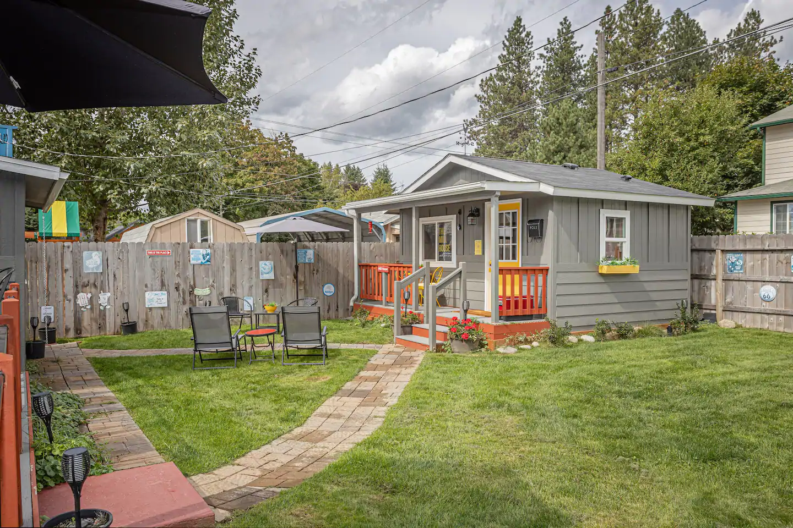

About
About Your Host
Ever since I was a child I knew that I wanted to spend my adult life in a small resort town with a little plot of land to call my own. Luckily in 2008 that dream became a reality. After one vist on a vacation to Coeur d'Alene I knew that this was the place for me. The cozy town spoke to me and I made arrangements to move up immediatly. I spent years working in the local hotel as a hospitality consultant until 2015.
About the Mill House
In 2015, life was changing around me. The town of Couer d'Alene was beginning to boom and I was looking to try something new. The Mill House began as a shed that I had in my backyard for years and had always joked would be an adorable guest house. After a few months of serious thought, I decided to take the leap and transform it into the little house it is today. Having worked in the hospitality business for over 30 years transforming it into the town's coziest stay was a challenge I was up for. Since then, I have had over 1,000 guests stay at the Mill House and have baked fresh cookies for each and every one. I hope to do the same for you when you book!